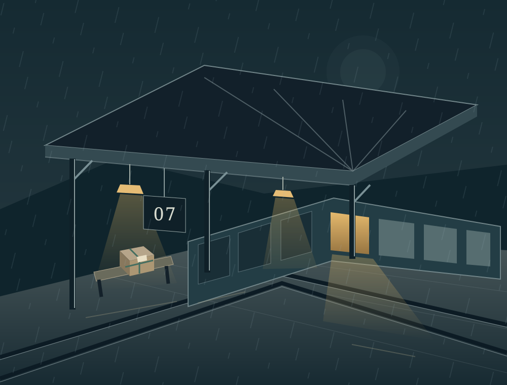

An original story in your hands
A parcel for the rain
A station appears. A lost parcel waits. Inez Vale has one night to decide where it belongs.
Step onto Platform SevenFour choices. Three endings. No hurry.

Service resumes when it rains
Some words take the long way home
You are Inez, a letter carrier who knows every address in the city. Platform Seven has no address. It has a parcel with your name on it, your father’s handwriting, and a clock that has been ticking for thirty years.
How choices and keepsakes work →